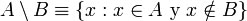

IGUALDAD DE CONJUNTOS
Dos conjuntos A y B se dicen iguales, lo que se escribe A = B si constan de los mismos elementos. Es decir, si y solo si todo elemento de A está también contenido en B y todo elemento de B está contenido en A. En símbolos:
DIAGRAMAS DE VENN
Un diagrama de Venn es una representación pictórica de conjuntos en el plano. El conjunto universal U se representa por un rectángulo, cualquier otro conjunto se representa con un círculo. Una operación se representa mediante el sombreado de los elementos del conjunto.
Diagrama de Venn que muestra
Un conjunto A se dice que es subconjunto de otro B, si cada elemento de A es también elemento de B, y se denota:
Es decir:
Cabe señalar que, por definición, no se excluye la posibilidad de que si A⊆B, se cumpla A = B. Si, siendo A un subconjunto de B, B tiene por lo menos un elemento que no pertenezca al conjunto A, entonces decimos que es un subconjunto propio de B, lo que se representa por:
Es decir:
Así, el conjunto vacío es subconjunto propio de todo conjunto (excepto de sí mismo), y todo conjunto A es subconjunto "impropio" de sí mismo.
Demostración
Si A es un subconjunto de B, decimos también que B es un superconjunto de A, lo que se escribe:
Así pues
también que:
significando que B es superconjunto propio de A.
La relación "ser subconjunto" ⊆ es una relación de orden entre conjuntos puesto que es reflexiva, transitiva y antisimétrica.
OPERACIONES CON CONJUNTOS
Unión A∪B
Ejemplo:
Consideremos los siguientes conjuntos:
A= {1,3,5,7}
B={1,2,3,4,5}
A U B ={1,2,3,4,5,7}
La representación grafica será, la región Azul representa el conjunto A U B
Diagrama de Venn que ilustra A∪B
Para cada par de conjuntos A y B existe un conjunto unión de los dos, que se denota como A∪B el cual contiene todos los elementos de A y de B.
Esto significa que x ∈ A ∪ B si y sólo si x ∈ A ó x ∈ B
De manera más general, para cada conjunto S existe otro conjunto denotado como ∪S de manera que sus elementos son todos los elementos x ∈ Xde algún elemento de S, X ∈ S.
De esta manera A∪B es el caso especial donde S={A,B}
Ejemplo. Si tenemos los conjuntos:
Entonces:
INTERSECCIÓN ∩
Ejemplo:
Consideremos los siguientes conjuntos:
A= {1,3,5,7}
B={1,2,3,4,5}
A ∩ B ={1,3,5}
La representación grafica será, la región Azul representa el conjunto A U B
Diagrama de Venn que ilustra A ∩ B
Los elementos comunes a A y B forman un conjunto denominado intersección de A y B, representado por A ∩ B . Es decir, A ∩ B es el conjunto que contiene a todos los elementos de A que al mismo tiempo están en B:
Esto significa que x∈A∩B si y sólo si x∈A y x∈B.
Puede definirse también la intersección de una familia de conjuntos, ∩ Sde forma similar al caso de la unión. Si dos conjuntos A y B son tales que A∩B=0, entonces se dice que A y B se dice que son conjuntos disjuntos.
Ejemplo. Si tenemos los conjuntos
entonces:
DIFERENCIA
Ejemplo. Dados los conjuntos:
A={1, 2, 3, $, &, 0, ^}
B={3, 6, 8, ^, 2}
Se tiene:
A\B= {2, 3, ^}
B\A= {6, 8}

Diagramas de Venn que muestran A\B
Diagramas de Venn que muestra B\A
Los elementos de un conjunto A que no se encuentran en otro conjunto B, forman otro conjunto llamado diferencia de A y B, representado por A/B . Es decir:
Se denota como A-B.
COMPLEMENTO
El complemento de un conjunto A es el conjunto de todos los elementos que no pertenecen a A.
El conjunto complemento siempre lo es respecto al conjunto universal que estamos tratando, esto es, si hablamos de números enteros, y definimos el conjunto de los números pares, el conjunto complemento de los números pares es el formado por los números impares. Si estamos hablando de personas, y definimos el conjunto de las personas rubias, el conjunto complementario es el de las personas no rubias.
Ejemplo. Consideremos el universo de los números naturales {1,2,3,...}, y entendamos los puntos suspensivos "..." como "y todos los demás". Sean los conjuntos:
Se tiene entonces:
Diagrama de Venn que ilustra el complemento de A, AC.
DIFERENCIA SIMÉTRICA
Ejemplo:
Sean dos conjuntos A y B.
Sea A definido asi: A = {j, u, g, o, d, e}
Sea B definido asi: B = {m, a, n, g, o}
La DIFERENCIA SIMÉTRICA posible se representa asi AΔB = {j, u, d, e, m, a, n}
Diagrama de Venn que ilustra la diferencia simétrica de A y B, AΔB.
La diferencia simétrica de dos conjuntos A y B viene dada por los elementos que pertenecen a uno y sólo uno de los dos:
Tambien se denota por: